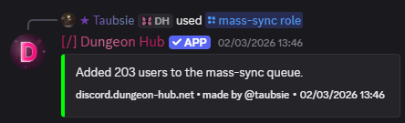

/mass-sync role ✏️
Arguments
Name | Type | Description | Optional? | Additional |
|---|---|---|---|---|
| Role | Role whose members should be queued. | ❌ No | @everyone supported; bots are skipped. |
Examples
/mass-sync role role: @Guild Member

21 August 2026
Name | Type | Description | Optional? | Additional |
|---|---|---|---|---|
| Role | Role whose members should be queued. | ❌ No | @everyone supported; bots are skipped. |
